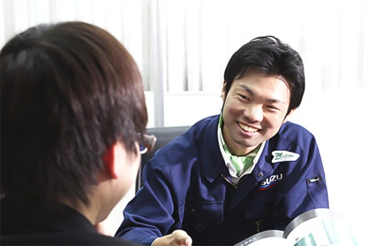
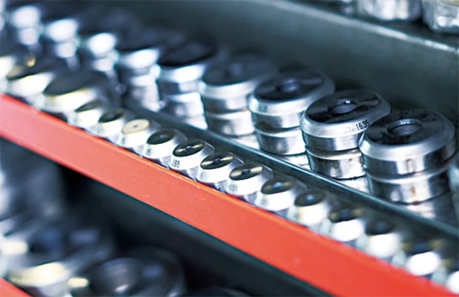
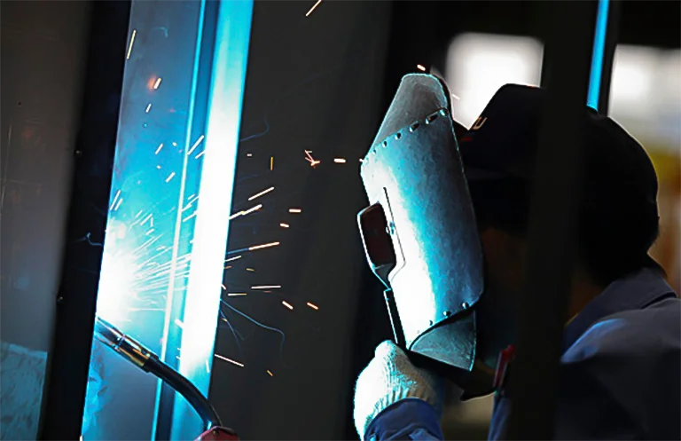

STEP 01 / HEARING
ヒアリング
いすゞ製作所は、試験したい製品や目的、必要な温度・湿度条件、設置スペース、操作方法などを丁寧に伺います。お客様が今困っていることと、装置に求める条件を整理し、実現したい試験の姿を共有します。仕様がすべて決まっていない段階でもご相談いただけます。
01 / お困りごとから始まる装置づくり
「こんな試験をしたい」「今の装置では対応できない」。そんな声を受け止め、必要な機能・形状・使いやすさを一緒に考えます。
まず、何を実現したいのかを整理し、装置の構想を組み立てる「意匠設計」へ。続いて、構想を図面にする設計と、加工・組立・検査を担う現場が連携します。相談段階で仕様が固まっていなくても、実現方法からご相談いただけます。
02 / FROM NEEDS TO DELIVERY
相談から納品まで、ひとつながりのものづくり。各工程で何をするのかを、写真とともにご紹介します。

いすゞ製作所は、試験したい製品や目的、必要な温度・湿度条件、設置スペース、操作方法などを丁寧に伺います。お客様が今困っていることと、装置に求める条件を整理し、実現したい試験の姿を共有します。仕様がすべて決まっていない段階でもご相談いただけます。

ヒアリングで明らかになった課題に対し、いすゞ製作所が装置の構成や形状、使いやすさ、試験方法を検討し、解決の方向性を提案します。この構想づくりが意匠設計です。既製品では難しい条件にも、目的に合わせて装置のあり方から考えられることが、特型対応の強みです。

いすゞ製作所は、提案した装置の構想を具体的な図面と設計情報に落とし込みます。機能や操作性だけでなく、部品の加工方法、組立、検査までを見据えて、設計担当と製造現場が連携して進めます。
いすゞ製作所は、金属板の切り出し・曲げ・溶接・塗装までを連携させ、装置の用途や設置条件に合わせた筐体や部品をつくります。設計の意図を各加工工程に伝えることで、既製品の形にとらわれず、必要なサイズや構造を具体化します。

金属板を必要な形に切り抜く精密板金加工。材料を無駄なく使い、部品形状をつくります。
切り抜いた板材を曲げ、装置の筐体や部品に必要な立体形状へ加工します。

板材や骨組みを接合し、装置を支える頑丈な筐体を仕上げます。

表面を丁寧に塗装して美しく仕上げ、次の組立工程につなげます。
いすゞ製作所は、加工した部品や筐体に機器・配線・付属装置を組み込み、完成した試験装置へと仕上げます。設計意図を製造現場と共有しながら、一台ごとに必要な構成を形にしていきます。

いすゞ製作所は、完成した装置の仕様・性能・外観を一台ごとに確認します。連続運転試験や検査データの記録を通じて、出荷前の状態を確かめ、納入後の問い合わせにもつながる情報を残します。
品質を支える管理体制を見る ↘
いすゞ製作所は、検査を終えた装置をお客様へ納品します。納品して終わりではなく、運用中のお困りごとや修理などのご相談にも対応し、装置を長く安心してお使いいただくためのサポートにつなげます。
アフターサポートを見る →※工程の内容や実施順序は装置の仕様により異なります。
03 / QUALITY MANAGEMENT
製品の品質は、検査だけでなく日々の管理と改善によって支えられています。
いすゞ製作所は、品質管理の専任スタッフを中心に、計測器や製品データを管理しています。ISO運営委員会と各部署の担当者が連携し、日々の品質改善につなげています。
製品を正しく確認するため、品質管理に用いる計測器を管理しています。国家計量基準へのトレーサビリティを重視し、測定の信頼性を支えています。

ISO 9001に基づく品質マネジメントの仕組みを通じて、部門を横断した管理と継続的な改善に取り組んでいます。
04 / INSPECTION & RECORDS
検査部門では、製品の仕様・性能に加え、細部や外観を確認しています。出荷製品のデータログを残し、連続運転試験を実施しています。
製品を納入して終わりにせず、検査記録を出荷後の問い合わせや不具合対応にも役立てる体制を整えています。
サポートについて →「こんな条件で試験したい」「既製品では対応できない」など、装置に関するお困りごとをお聞かせください。具体的な仕様が固まっていなくても、ご相談いただけます。